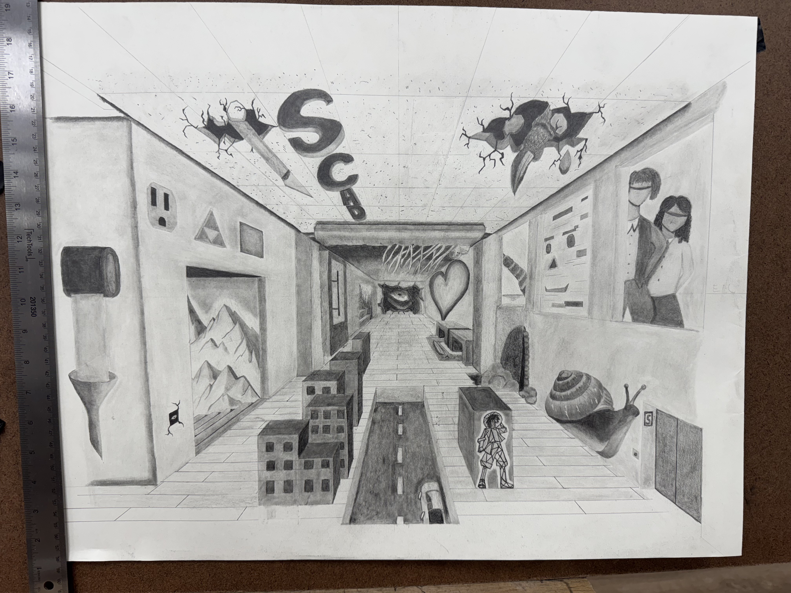
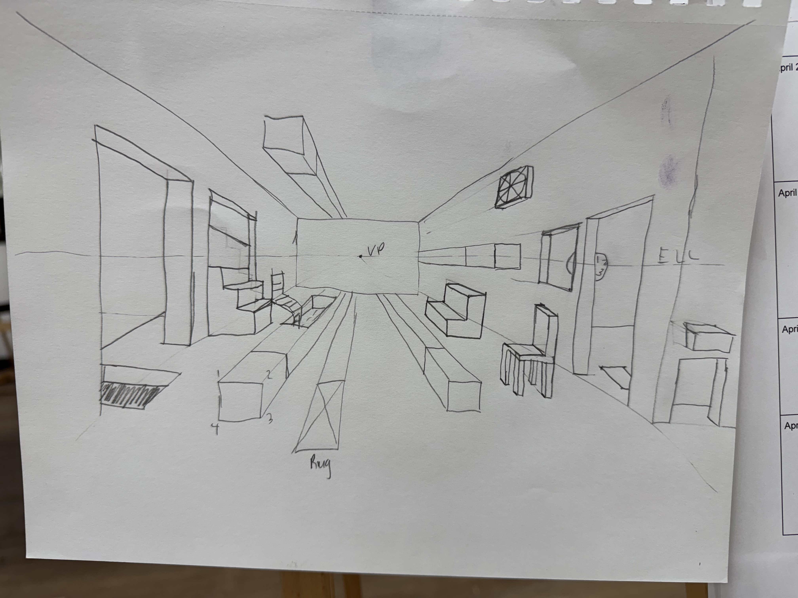
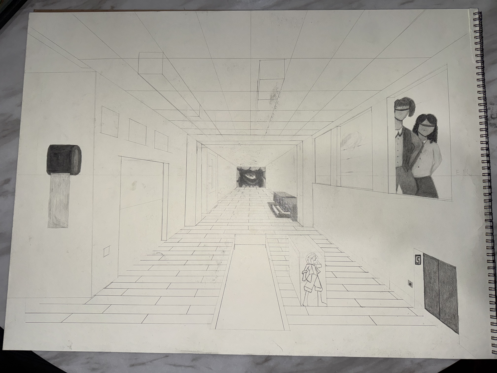
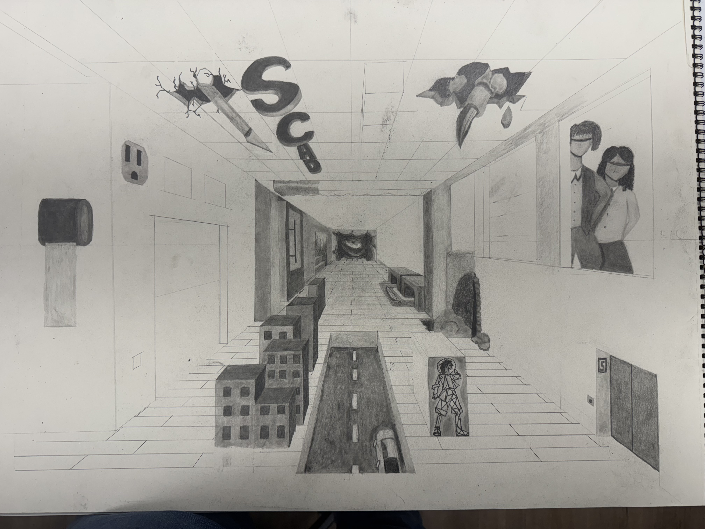

✕

This pencil drawing explores one point perspective — a foundational concept in art and design that teaches how objects relate to a single vanishing point on the horizon. The assignment challenged me to fill the composition with objects that hold personal meaning, viewed through the lens of a single perspective.
Beyond the technical requirements, this project was an exercise in understanding depth, scale, and spatial relationships — skills that directly inform how I approach layout and composition in my digital work today.
Understanding one point perspective requires more than just drawing lines to a vanishing point — it means understanding how depth affects the perceived size of every object in a scene and how rendering adds dimension to flat lines.
I chose objects meaningful to me personally and arranged them to demonstrate strong perspective depth. Through multiple versions and refinements, I developed a composition that felt both technically accurate and visually compelling.
Selected a collection of objects with personal significance to fill the composition. Each object was chosen not just for meaning but for how it would contribute to the overall depth and visual interest of the scene.
Mapped out the horizon line and single vanishing point before drawing anything else. All perspective lines were constructed from this point to ensure spatial accuracy throughout the composition.
Developed multiple versions of the composition, refining object placement, scale, and spatial relationships with each pass before committing to the final arrangement.
Applied shading and rendering techniques to add depth, volume, and dimension to the objects. Rendering transformed flat line work into a three-dimensional scene with weight and presence.
Three versions were developed before arriving at the final composition, each refining the perspective accuracy, object selection, and rendering quality.



Understanding how a single point controls the entire spatial logic of a composition changed how I think about layout — in drawing and in digital design.
Shading and rendering aren't just finishing touches — they're what make a flat drawing feel like it exists in three dimensions. The same principle applies to UI design with shadows and layers.
Learning perspective through pencil and paper built a foundation that makes digital composition more intuitive. The fundamentals never go out of style.